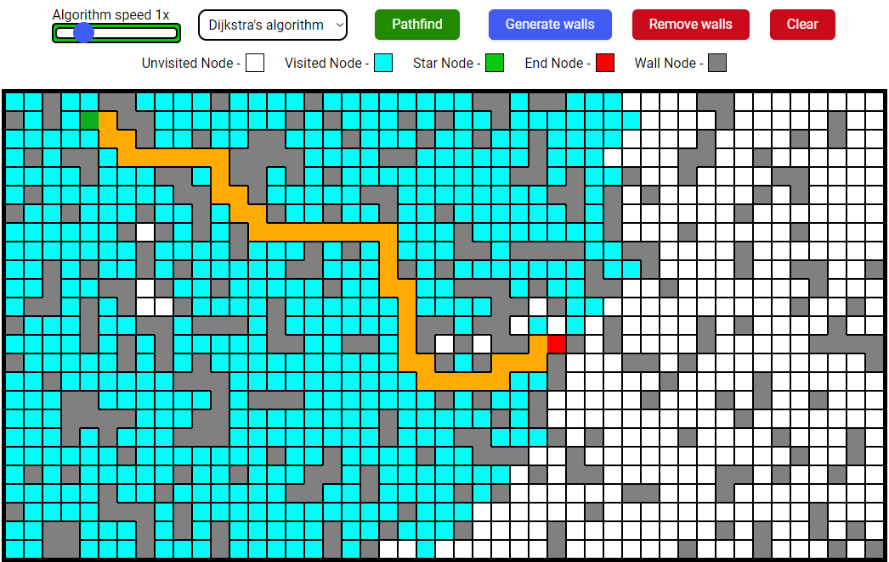

Weather application
A weather application is a dynamic website that provides users with real-time
weather information based on their current city. Through the integration of various APIs,
the
application retrieves the user's location and fetches the corresponding weather data. The
website incorporates engaging background animations that adapt to the current weather
conditions, including rain, clouds, and sunshine. Users can easily access their current
city,
temperature readings, and wind speed, with the application's icon changing dynamically
based on the temperature. Developed using React, the application efficiently manages
asynchronous API calls to ensure seamless data retrieval and display.
Languages, tools and methods used: JavaScript, HTML, CSS, React, API,
asynchronous API
GitHub link: https://github.com/KostasKilda/weather
Live website: https://weather-beige-eta.vercel.app

Pathfinder visualiser
A visually interactive website that visualizes different search algorithms. The
website has numerous functionalities, allowing users to create custom mazes and observe
the algorithms' performance in real time.
Languages, tools and methods used: JavaScript, HTML, CSS
GitHub link: https://github.com/KostasKilda/pathfindingVisualizer
Live website: https://kostaskilda.github.io/pathfindingVisualizer/
Youtube video downloader
A Python application that enables users to download YouTube videos using video or
playlist URLs. The application utilizes CustomTKinter to deliver an aesthetically pleasing
user
interface
Languages, tools and methods used: Python
GitHub link: https://github.com/KostasKilda/YoutubeDownloader

DessertLand
DessertLand's website showcases a simple and functional design, perfect for candy shop browsing.
It incorporates a responsive navigation bar, image carousel/slider, and a warm visual style.
Languages, tools and methods used: JavaScript, HTML, CSS, Bootstrap.
GitHub link: https://github.com/KostasKilda/dessertLand
Live website: https://kostaskilda.github.io/dessertLand/